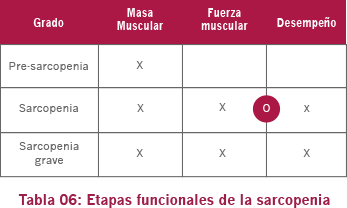

02. Sarcopenia
EWGSOP (Grupo de Trabajo Europeo en Sarcopenia en Personas Ancianas – European Working Group on Sarcopenia in Older People*) sugiere etapas funcionales de la sarcopenia e indica la respectiva incapacitación provocada en cada uno, tal como podemos observar en la Tabla 06:
- La pre-sarcopenia está marcada por una disminución de la masa muscular, pero sin impacto en la fuerza muscular o en el desempeño físico. Esta etapa solo puede ser identificada por medio de técnicas de medida de la masa muscular.
- La etapa de sarcopenia propiamente dicha está caracterizada por disminución de la fuerza muscular o del desempeño físico. Es en esta etapa que comienzan a aparecer los síntomas clínicos.
- Por fin, la sarcopenia grave presenta los tres criterios reunidos, con un daño importante en la autonomía del individuo afectado.
- *En EWGSOP fueron incluidos representantes de cuatro organizaciones: la Sociedad Europea de Medicina Geriátrica, la Sociedad Europea de Nutrición Clínica y Metabolismo, la Asociación Internacional de Gerontología y Geriatría – Región Europea y de la Asociación Internacional de Nutrición y Envejecimiento). Este grupo tiene el reconocimiento global en la calidad científica y desarrollo de estudios y de informaciones relacionadas al proceso de envejecimiento humano.